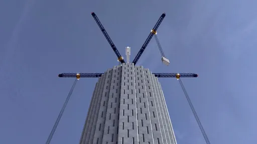
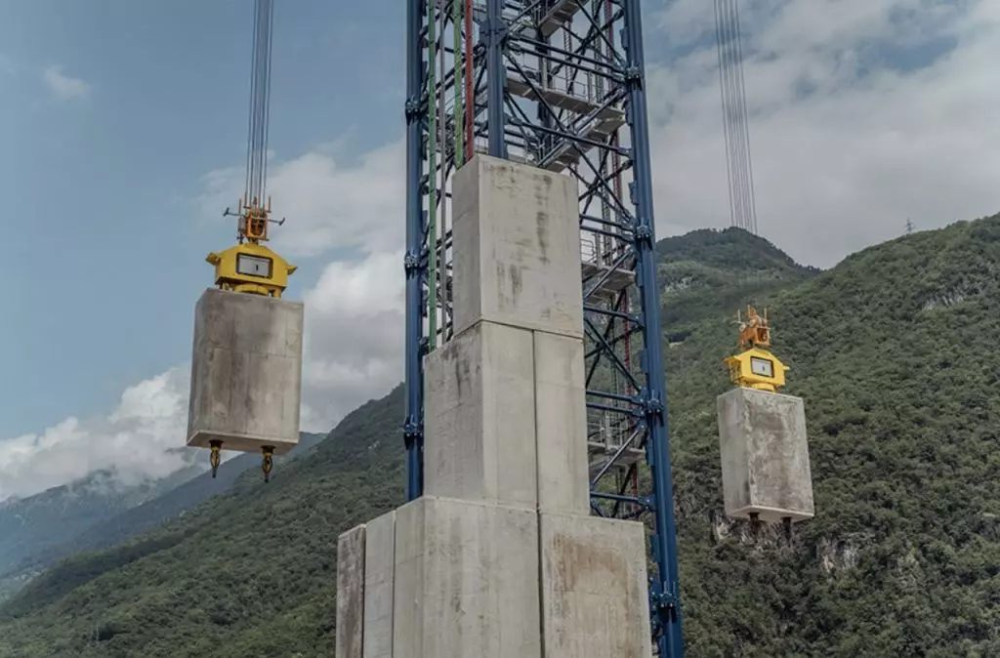

Bateria Gravitacional
O que é uma bateria gravitacional
Bateria de gravitacionais são dispositivos que armazenam energia na forma de energia potencial gravitacional

Bateria de gravitacionais são dispositivos que armazenam energia na forma de energia potencial gravitacional
Pode não parecer mas mochilas tem muito a ver com energia pois toda vez que usamos uma mochila estamos usando a energia de ligação das moléculas da mochila para fazer com que a mochila se mantenha a íntegra e dessa forma formar um espaço em que tudo que está dentro fica contido dentro da mochila a mochila por sua vez está fixada no corpo do carregador (pessoa que esta carregando-a) ou seja mochilas sustentam os materiais que estão contidos dentro delas e fazem com que eles acompanham o carregador

Essa foi uma fórmula desenvolvida pelo excelentíssimo desenvolvedor desse site e Expressa de forma simplificada a energia poupada pela mochila, a explicação está logo adiante após a equação
fbg - fmg + fb - fm = fdGeradores de corrente alternada são geradores que convertem energia mecânica para energia elétrica tanto geradores a gás como geradores de hidrelétricas se utilizam de corrente alternada em uma posição a corrente alternada existe também a corrente contínua porém a mesma tem uma deficiência muito grande e perdas durante a transmissão da energia por fios e portanto é pior do que a corrente alternada por isso atualmente na rede elétrica se usa apenas corrente alternada sendo que em aparelhos elétricos ela é convertida em corrente contínua por motivos logísticos
Incrivelmente a chuva também armazena energia no caso a energia potencial gravitacional por exemplo através das chuvas é que a água que já passou por uma hidrelétrica pode retornar a uma parte mais alta anterior a hidrelétrica assim gerando energia mais de uma vez através daquela hidrelétrica é importante citar que energia não foi gerada magicamente no caso a energia usada para deslocamento da água de um ponto posterior à hidrelétrica para um ponto anterior a hidrelétrica foi fornecida pela luz solar
Molas também são uma forma de guardar energia que pode posteriormente ser convertida em energia cinética
O escudo do Capitão América é dito que pode parar impactos pois absorver energia cinética isso simplesmente não faz sentido da forma que é
apresentado um impressor da  força sobre o escudo iria sofrer uma força de mesma intensidade em sentido oposto ou o escudo seria deslocado no mesmo sentido do movimento e
a aceleração do escudo e
do impressor da força iria se equilibrar
força sobre o escudo iria sofrer uma força de mesma intensidade em sentido oposto ou o escudo seria deslocado no mesmo sentido do movimento e
a aceleração do escudo e
do impressor da força iria se equilibrar
Baterias gravitacionais servem para armazenar energia e de certa forma geradores servem para produzir energia, na verdade geradores convertem um tipo de energia para energia elétrica dessa forma ao converter energia cinética de uma turbina de uma hidrelétrica para energia elétrica essa energia elétrica por sua vez pode ser armazenada em bateria gravitacional e essa por sua vez pode liberar essa energia elétrica quando necessário Explicação mais detalhada Baterias gravitacionais consistem em pesos que são erguidos e posteriormente quando é necessário liberar a energia que está armazenada na forma de energia potencial gravitacional os pesos são soltos e os mesmos puxam cabos que estão conectados a geradores de corrente alternada esses por sua vez convertem a energia cinética para energia elétrica que pode ser usado em aparelhos eletrônicos Vale destacar que a energia cinética foi convertida a partir da força gravitacional